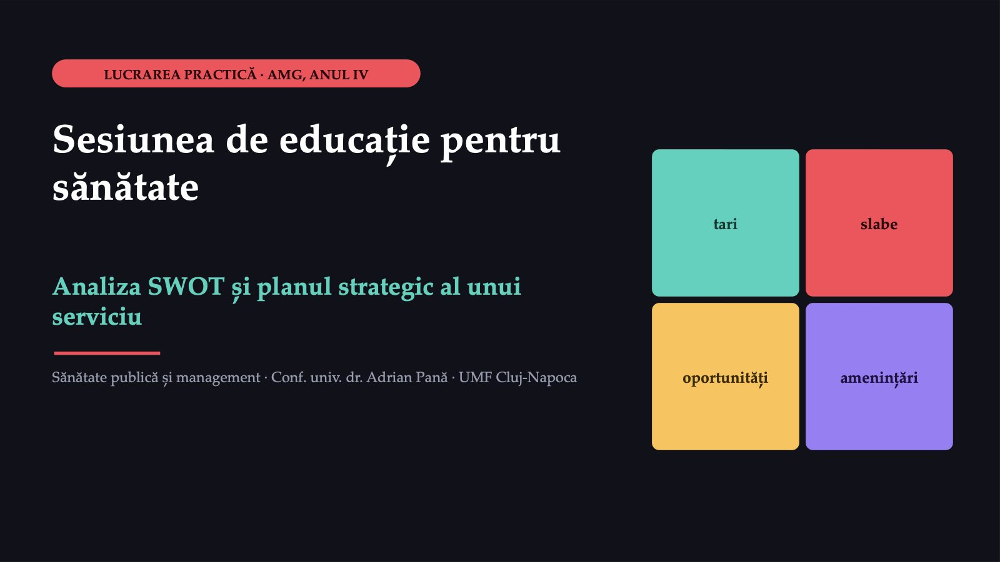
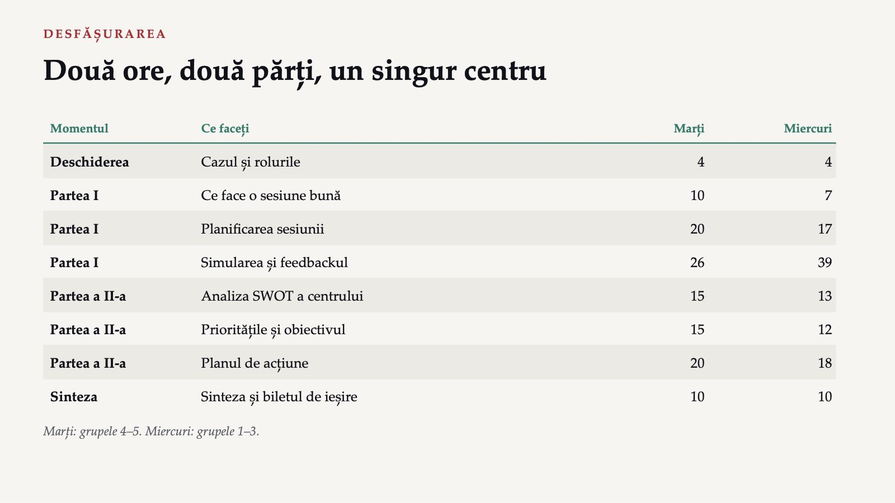
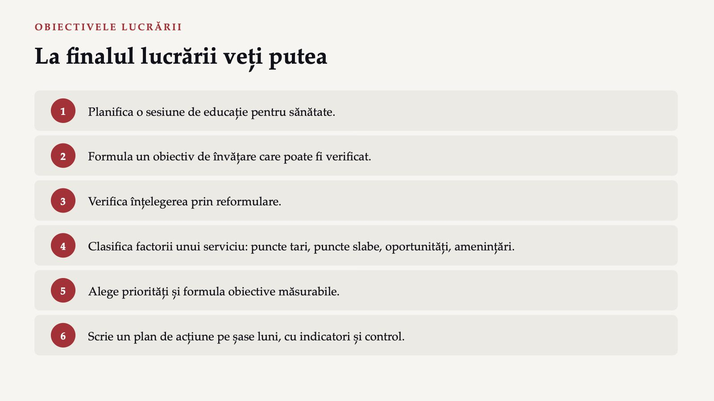
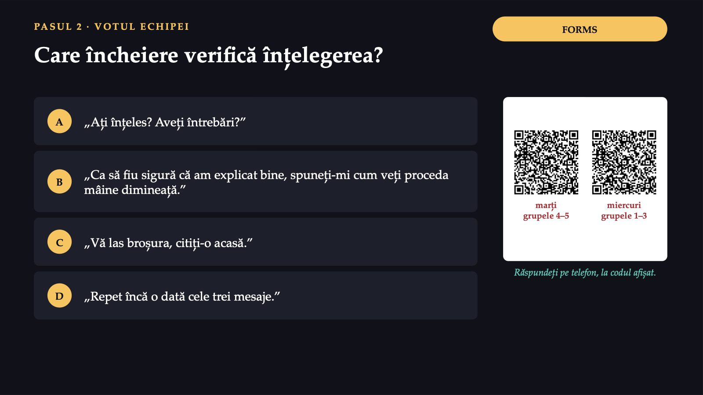
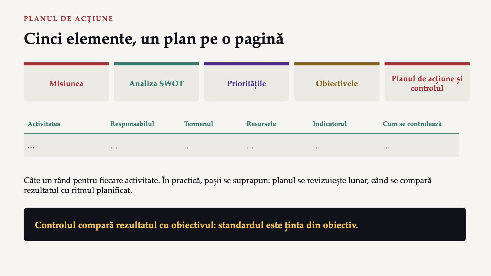
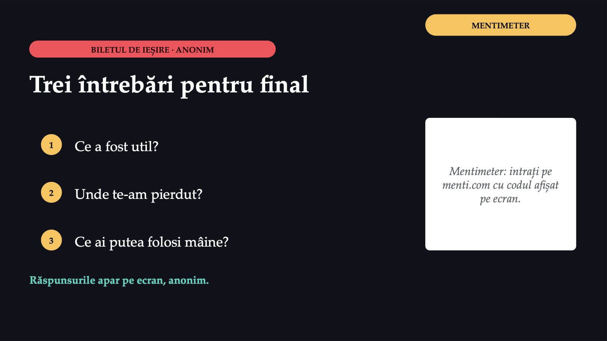

Sesiunea de educație pentru sănătate

1 / 26Două ore, două părți, un singur centru

2 / 26La finalul lucrării veți putea

3 / 26Trei cereri în aceeași săptămână
 4 / 26
4 / 26Ce conține planul unei sesiuni
 5 / 26
5 / 26Ce se vede la sfârșitul sesiunii
![OBIECTIVUL DE ÎNVĂȚARE Ce se vede la sfârșitul sesiunii Se poate verifica „spune”, „arată”, „alege”, „își măsoară”: participantul face sau spune ceva observabil. Nu se poate verifica „înțelege”, „conștientizează”, „află”: nu se văd la sfârșitul sesiunii. Nici formulările care descriu ce face educatorul (prezentarea unor diapozitive, informarea participanților, împărțirea unei broșuri) nu sunt obiective de învățare: ele nu spun ce poate face participantul la final. Un obiectiv bun este specific, măsurabil, realizabil, relevant și încadrat în timp.](diapozitive/LP03/006.jpg) 6 / 26
6 / 26Care formulare poate fi verificată?
![FORMS PASUL 1 · VOTUL ECHIPEI Care formulare poate fi verificată? Valori ipotetice. Clubul pensionarilor: 15 membri, 9 cu aparat acasă. A Participanții vor conștientiza importanța controlului tensiunii arteriale. B La sfârșitul sesiunii de 30 de minute, fiecare dintre cei 9 participanți care au aparat acasă își măsoară tensiunea cu aparatul adus de centru, în fața asistentei, respectând pașii arătați, și notează valoarea în carnetul lui. C Prezentarea a douăzeci de diapozitive despre hipertensiunea arterială. D Informarea vârstnicilor despre riscurile tensiunii mari. Răspundeți pe telefon, la codul afișat. marți grupele 4–5 miercuri grupele 1–3](diapozitive/LP03/007.jpg) 7 / 26
7 / 26Care încheiere verifică înțelegerea?

8 / 26Ce arată cele două răspunsuri corecte
![RĂSPUNSURILE LA VOT Ce arată cele două răspunsuri corecte Pasul 1: obiectivul Cine (cei 9 cu aparat), ce face (își măsoară tensiunea), cum se verifică (în fața asistentei), până când (la sfârșitul sesiunii). Pasul 2: încheierea Un „da” la „Ați înțeles?” nu arată ce a înțeles persoana. Repetarea mesajelor nu verifică nimic: vorbește tot educatorul. Verificarea prin reformulare: persoana explică cu propriile cuvinte sau arată ce i s-a arătat. Revizia sistematică din 2020: direcția efectului, nu mărimea lui.](diapozitive/LP03/009.jpg) 9 / 26
9 / 26Planificați o sesiune de zece minute
![FORMS SARCINA ECHIPEI Planificați o sesiune de zece minute 1 Elevii de clasa a opta: fumatul 2 Clubul pensionarilor: tensiunea arterială 3 Gravidele din evidența cabinetului: vaccinarea copilului după naștere Alegeți un grup-țintă; fiecare grup este ales de cel puțin o echipă. Completați în formular cele șapte rubrici ale fișei. Conținutul medical se ia din notele cursurilor: nu adăugați recomandări pe care notele nu le conțin. Grila: grupul-țintă, obiectivul, cel mult trei mesaje, participanți activi, evaluarea prin reformulare. Răspundeți pe telefon, la codul afișat. marți grupele 4–5 miercuri grupele 1–3](diapozitive/LP03/010.jpg) 10 / 26
10 / 2613 minute pentru fiecare grupă de studiu
![JOC DE ROL SIMULAREA ȘI FEEDBACKUL 13 minute pentru fiecare grupă de studiu Sesiunea · 10 minute Feedback oral · 2 răspunsul educatorului: 1 minut Tragerea la sorți Din fiecare grupă de studiu se trage la sorți o echipă: două marți, trei miercuri. Același grup-țintă nu se simulează de două ori. Feedbackul Două echipe trase la sorți spun oral un lucru reușit și un lucru de schimbat, raportat la grilă. Celelalte notează în portofoliu. Fiecare observație trimite la un criteriu al grilei, nu la persoana educatorului.](diapozitive/LP03/011.jpg) 11 / 26
11 / 26Un plan de sesiune corect, printre mai multe
![MODEL · PLANUL PENTRU GRAVIDE Un plan de sesiune corect, printre mai multe Grupul-țintă gravidele din evidența cabinetului; bariere probabile: teama de reacții adverse, necunoașterea locului Obiectivul fiecare spune unde și cum programează vaccinurile copilului de la vârsta de 2 luni Mesajele calendarul național; vaccinarea la medicul de familie, cu programare; întrebarea se pune medicului Metodele explicație de trei minute; calendar tipărit, cu prima programare marcată Evaluarea reformulare; indicator: proporția copiilor vaccinați la termen](diapozitive/LP03/012.jpg) 12 / 26
12 / 26Centrul după primul an
![VALORI IPOTETICE · PARTEA A DOUA Centrul după primul an 1 Mediatoarea are încrederea familiilor din sate. 2 Registrul arată care copii au vaccinuri restante. 3 Fără autoturism; autobuzul circulă de două ori pe zi. 4 Asistenta socială lucrează două zile pe săptămână. 5 Consiliul județean anunță finanțare pentru telemedicină. 6 Școala cere sesiuni de educație pentru sănătate. 7 Medicul de familie se pensionează peste un an, fără înlocuitor. 8 Afirmații false despre vaccinuri circulă în grupurile părinților. Din 50 de copii sub doi ani din evidență, 30 au vaccinurile la zi.](diapozitive/LP03/013.jpg) 13 / 26
13 / 26Patru căsuțe, două întrebări
![ANALIZA SWOT Patru căsuțe, două întrebări AJUTĂ ÎNCURCĂ INTERN EXTERN Puncte tari ce face bine serviciul: capacitățile și resursele lui Puncte slabe goluri de capacitate, nu neapărat defecte Oportunități situații din afară de care serviciul poate profita Amenințări factori externi care îngreunează scopurile Două întrebări
1. Factorul ține de resursele serviciului sau vine din afara lui?
2. Ajută sau încurcă?
Intern: oamenii, echipamentele, datele și modul de lucru ale centrului.
Extern: deciziile altor instituții, finanțările anunțate, cererile din comunitate, informațiile care circulă.](diapozitive/LP03/014.jpg) 14 / 26
14 / 26Așezați cele opt constatări în matrice
![FORMS PASUL 1 · PARTEA A DOUA Așezați cele opt constatări în matrice 1 Desenați matricea pe o foaie, cu patru căsuțe, și așezați cele opt constatări ale Ioanei. 2 Pentru fiecare, notați: internă sau externă, ajută sau încurcă. 3 Adăugați câte o constatare proprie în fiecare căsuță, scrisă concret: „asistenta socială lucrează două zile pe săptămână”, nu „personal insuficient”. Aceeași constatare poate fi citită în două feluri: scrieți-o în căsuța efectului principal și notați cealaltă lectură. Răspundeți pe telefon, la codul afișat. marți grupele 4–5 miercuri grupele 1–3](diapozitive/LP03/015.jpg) 15 / 26
15 / 26Matricea centrului
![RĂSPUNSURILE · MATRICEA SWOT Matricea centrului Puncte tari încrederea familiilor în mediatoare; registrul electronic Puncte slabe lipsa autoturismului; asistenta socială două zile pe săptămână Oportunități finanțarea pentru telemedicină; cererea școlii Amenințări pensionarea medicului de familie; afirmațiile false despre vaccinuri Cererea școlii poate fi citită și ca încărcare a echipei; efectul principal este accesul la un grup-țintă, elevii.
Lipsa autoturismului rămâne punct slab chiar dacă soluția vine din finanțare externă: ține de resursele centrului.](diapozitive/LP03/016.jpg) 16 / 26
16 / 26Matricea nu spune singură ce se face
 17 / 26
17 / 26Calculați scorul și alegeți prioritatea
![FORMS PASUL 2 · PARTEA A DOUA Calculați scorul și alegeți prioritatea Valori ipotetice: notele echipei Ioanei, de la unu (mică) la trei (mare). Problema Importanța Fezabilitatea Copiii sub doi ani cu vaccinuri restante 3 3 Vârstnicii cu hipertensiune care nu își măsoară tensiunea 3 2 Pensionarea medicului de familie fără înlocuitor 3 1 Lipsa autoturismului 2 1 Care problemă devine prioritatea pentru următoarele șase luni? Ce faceți cu problema care are importanță mare, dar fezabilitate mică? Răspundeți pe telefon, la codul afișat. marți grupele 4–5 miercuri grupele 1–3](diapozitive/LP03/018.jpg) 18 / 26
18 / 269
![RĂSPUNSURILE · PRIORITATEA Scorurile: 9, 6, 3 și 2 9 copiii cu vaccinuri restante (3 × 3) 6 vârstnicii cu hipertensiune (3 × 2) 3 pensionarea medicului de familie (3 × 1) 2 lipsa autoturismului (2 × 1) Prioritatea: recuperarea vaccinurilor restante, pentru că centrul are resursele potrivite: registrul și mediatoarea. Pensionarea medicului are importanță mare, dar nu se rezolvă în șase luni: intră în planul pe termen lung și în pledoarie. Fezabilitate mică înseamnă că problema nu se rezolvă în acest plan, nu că nu este importantă.](diapozitive/LP03/019.jpg) 19 / 26
19 / 2650
 20 / 26
20 / 26Patru valori, o singură înlănțuire
![CUM SE CITEȘTE CALCULUL Patru valori, o singură înlănțuire 1 Acoperirea de pornire copiii cu vaccinurile la zi, împărțiți la toți copiii 2 La sfârșit nouă din zece, aplicat la toți copiii 3 De recuperat ținta minus copiii care au deja vaccinurile la zi 4 Ritmul lunar minim copiii de recuperat, împărțiți la luni Ritmul planificat este puțin peste cel minim, ca să rămână o rezervă. Valorile apar în formular, după trimitere. Obiectivul: nouă din zece copii sub doi ani cu vaccinurile la zi, până la sfârșitul celor șase luni.](diapozitive/LP03/021.jpg) 21 / 26
21 / 26Cinci elemente, un plan pe o pagină

22 / 26Planul de acțiune pe șase luni
![FORMS SARCINA ECHIPEI Planul de acțiune pe șase luni 1 Scrieți planul pentru obiectivul de vaccinare, cu cel puțin patru activități. 2 Folosiți un punct tare și o oportunitate; spuneți cum ocoliți sau acoperiți un punct slab. 3 Pentru fiecare activitate: control preventiv, concurent sau retroactiv? Preventiv: înainte de începerea activității. Concurent: în timpul ei. Retroactiv: după încheierea ei. În ultimele cinci minute, două echipe își citesc reciproc planul și dau câte o observație despre responsabili și termene. Răspundeți pe telefon, la codul afișat. marți grupele 4–5 miercuri grupele 1–3](diapozitive/LP03/023.jpg) 23 / 26
23 / 26Un plan de acțiune corect, printre mai multe
![MODEL · PLAN DE ACȚIUNE Un plan de acțiune corect, printre mai multe Luna întâi lista copiilor din registru, verificată cu medicul control preventiv Lunile întâi–a șasea vizitele mediatoarei, potrivite cu orarul autobuzului control concurent, prin lista de verificare Luna a doua sesiunea pentru gravide, încheiată prin reformulare control concurent Luna a treia cererea de finanțare pentru telemedicină control retroactiv, după termenul de depunere În fiecare lună copiii recuperați, comparați cu ritmul planificat control retroactiv Valori ipotetice. Există mai multe planuri corecte.](diapozitive/LP03/024.jpg) 24 / 26
24 / 26Două părți, același centru
![SINTEZA Două părți, același centru 1 Un obiectiv de învățare spune ce poate face participantul la final și se verifică prin reformulare, nu prin „Ați înțeles?”. 2 Punctele tari și slabe sunt interne; oportunitățile și amenințările sunt externe. 3 Un plan leagă fiecare obiectiv de activități, responsabili, termene și indicatori. Verificarea prin reformulare este, la scara unei întâlniri, ceea ce este controlul la scara unui serviciu. Portofoliul se completează individual, acasă, până sâmbătă, 24 octombrie 2026, ora 22:00.](diapozitive/LP03/025.jpg) 25 / 26
25 / 26Trei întrebări pentru final

26 / 26Săgeți sau spațiu: navigare · O: vedere de ansamblu · N: notele prezentatorului · F: ecran complet · Esc: închidere